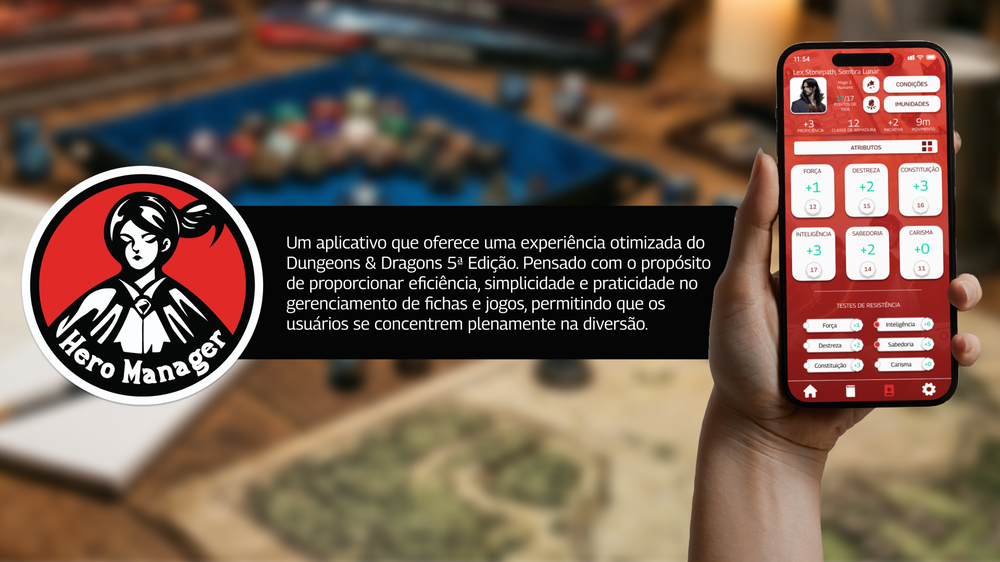
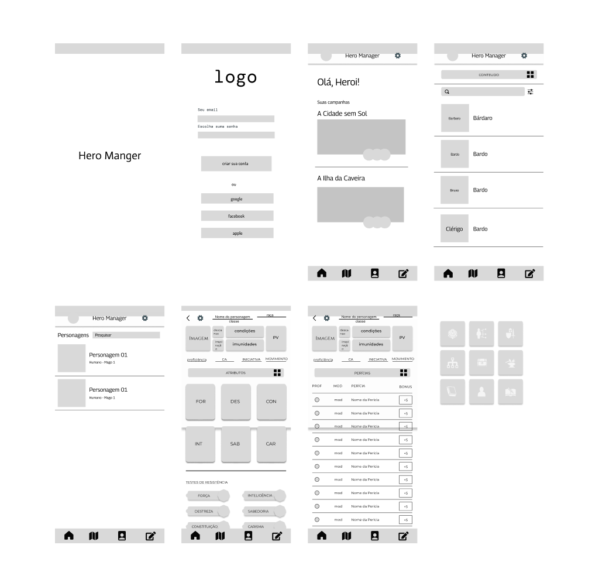
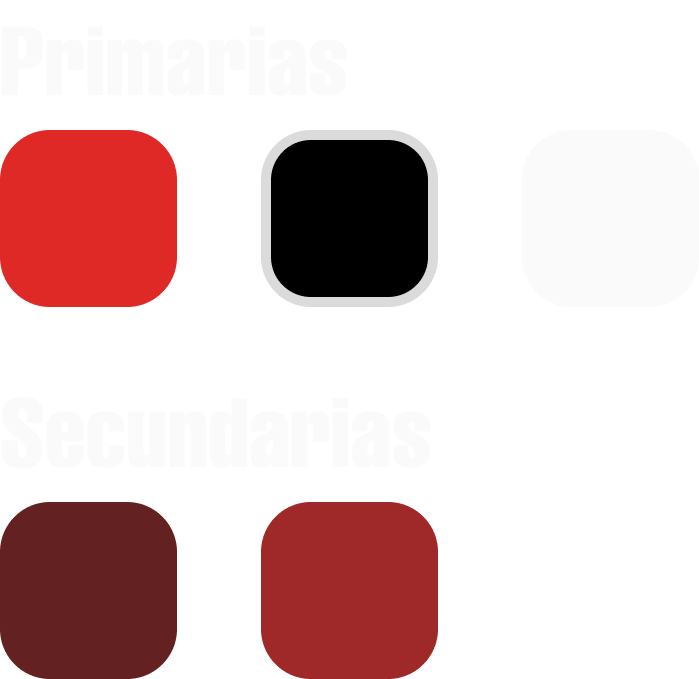
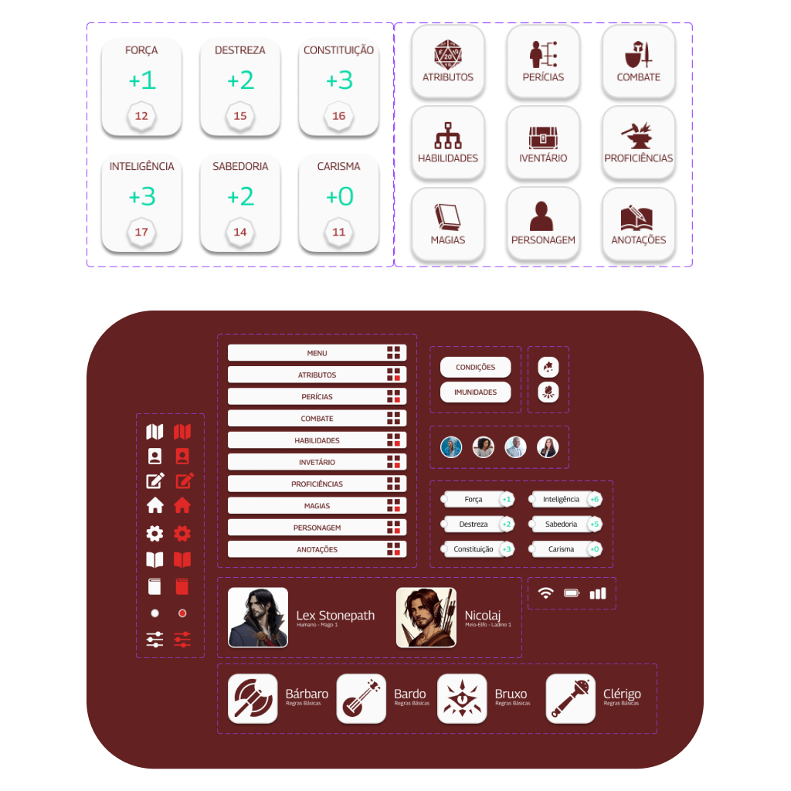
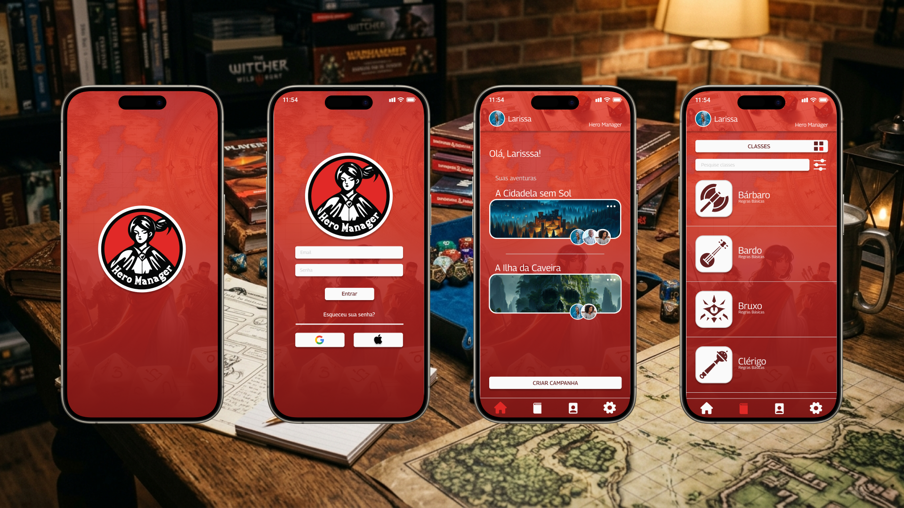
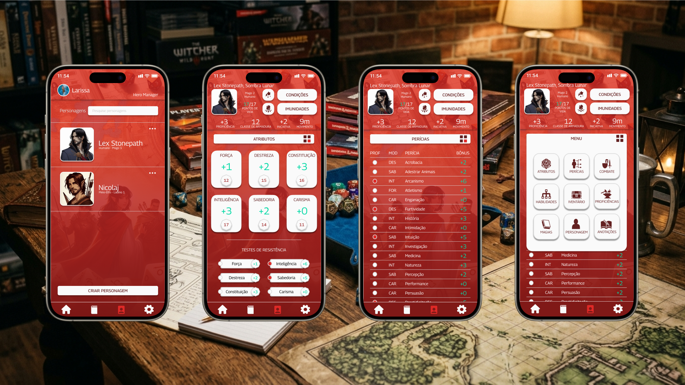
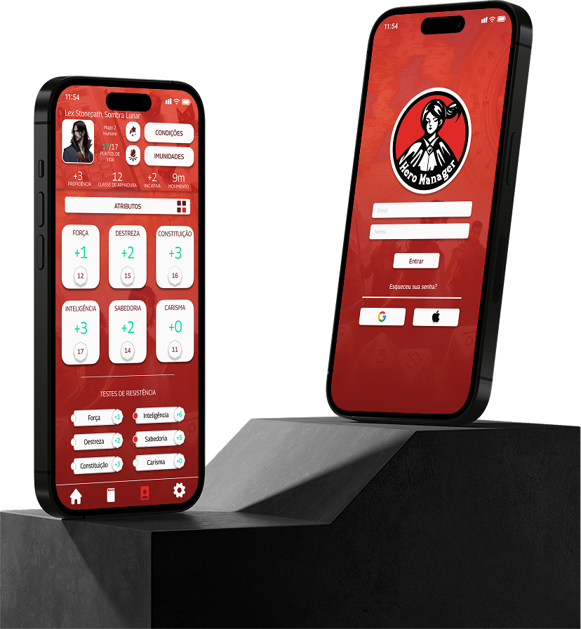
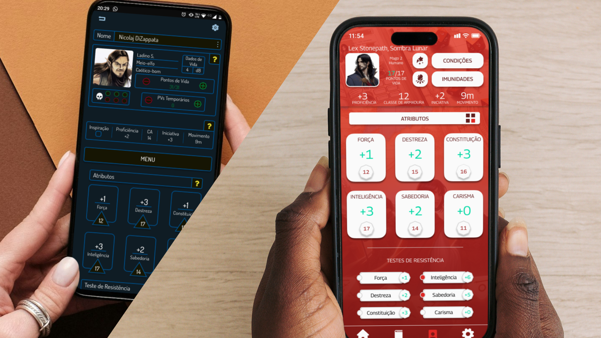

Hero Manager
Otimizando a gestão de fichas e campanhas de D&D 5ª Edição para mestres e jogadores. Um app mobile que transforma horas de burocracia em minutos de jogo.

CASE_04 // HERO_MANAGERREC ●Sobre o projeto
O Hero Manager é um aplicativo mobile para iOS e Android voltado a jogadores e mestres de Dungeons & Dragons 5ª Edição. Ele reúne fichas de personagem, campanhas, sessões, inventário, magias e condições em uma experiência rápida, offline-first e imersiva.
O produto nasceu como um projeto pessoal e foi totalmente redesenhado após minha maturação profissional em UX/UI Design, aplicando pesquisa estruturada, testes de usabilidade e arquitetura da informação.
Problema e objetivos
A ficha de personagem em papel ou PDF estático interrompe o ritmo da sessão entre rodadas de combate, anotações de condições, controle de PV, magias e inventário. Os apps existentes eram genéricos, burocráticos, pouco otimizados para toque e não atendiam bem condições, imunidades e descansos.
- Reduzir o tempo de gestão da ficha durante o jogo.
- Criar uma identidade visual conectada à atmosfera de D&D 5E.
- Oferecer acesso rápido às informações mais usadas em combate.
- Permitir gestão de múltiplas campanhas e personagens.
- Entregar uma experiência mobile-first, intuitiva e imersiva.
Contexto e papel
Atuei como UX/UI Designer end-to-end, responsável por pesquisa com usuários e concorrentes, arquitetura da informação, wireframes, protótipos, sistema visual, testes de usabilidade, iterações, handoff e documentação.
Ferramentas: FigJam, Miro, Notion, Typeform, Figma, Principle, Maze, Lookback, Illustrator e Iconify.
Processo de design
O projeto foi conduzido pelo Duplo Diamante, alternando descoberta e definição antes de desenvolver e entregar uma solução validada para sessões reais de D&D.
Descobrir
Conduzi entrevistas remotas com 10 jogadores e mestres, um survey com 87 respondentes e shadowing em 3 sessões via Discord e Roll20.
78% usavam ficha em papel ou PDF e 62% já haviam abandonado apps por considerá-los complicados. O benchmark de D&D Beyond, Roll20, Improved Initiative e Kobold Fight Club mostrou a oportunidade de simplificar a experiência mobile.
Definir
“Eu não quero abrir um app para gerenciar meu personagem. Eu quero abrir o app e voltar para o jogo em 2 segundos.” — jogador entrevistado.
Esse insight orientou cinco prioridades: velocidade em combate, imersão, condições e descansos visíveis, legibilidade em pouca luz e suporte a múltiplas campanhas.
Larissa, jogadora casual, precisava de acesso rápido a PV, condições e magias. Ricardo, mestre veterano, precisava alternar entre personagens e campanhas sem perder o foco na narrativa.
Desenvolver
Um workshop de Crazy 8s gerou 24 esboços em oito minutos. A solução convergiu para bottom navigation fixa, abas horizontais, cards de campanha e ações rápidas de combate.
Testes com 10 usuários substituíram a lista única por abas de Combate, Condições, Imunidades, Perícias, Magias, Inventário e Anotações.

WIREFRAME // HERO_MANAGERREC ●Entregar
O sistema final combinou paleta inspirada em D&D 5E, tipografia legível, componentes escaláveis e telas mobile-first. O resultado foi preparado para handoff e evolução futura.
Design final e sistema visual
O tema escuro reduz a fadiga visual em sessões noturnas e a paleta inspirada em D&D 5E reforça a conexão emocional sem comprometer contraste e legibilidade.
- Tipografia: Georama para títulos e interface, escolhida pela legibilidade em telas pequenas e pela flexibilidade entre pesos.

VISUAL_SYSTEM // TYPEREC ● - Paleta de cores: vermelho D&D para ações, dourado para acentos e recompensas, fundo escuro para reduzir fadiga em sessões noturnas.

VISUAL_SYSTEM // COLORREC ● - Sistema de componentes: botões, cards, inputs, chips, bottom navigation e modais de confirmação preparados para escala.

VISUAL_SYSTEM // COMPONENTSREC ●

UI // DESIGN_FINAL_01REC ●
UI // DESIGN_FINAL_02REC ●Resultados — impacto

IMPACT // FINAL_MOCKUPREC ●Após testes com 20 usuários em quatro sessões reais, o NPS passou de 32 para 71. O redesign transformou um app funcional, porém burocrático, em uma experiência rápida, imersiva e centrada no jogador.
Aprendizados — reflexão

LEARNING // EVOLUCAOREC ●O contexto de uso guiou decisões de contraste, toque e hierarquia. A pesquisa também mostrou que remover uma ação rara do menu libera espaço para o que realmente mantém o jogador na mesa. O Double Diamond trouxe ritmo para alternar exploração e foco sem antecipar a solução.
Próximos passos: modo Mestre com tracker de iniciativa, sincronização em nuvem, compartilhamento de fichas, integração com SRD oficial e temas personalizáveis.